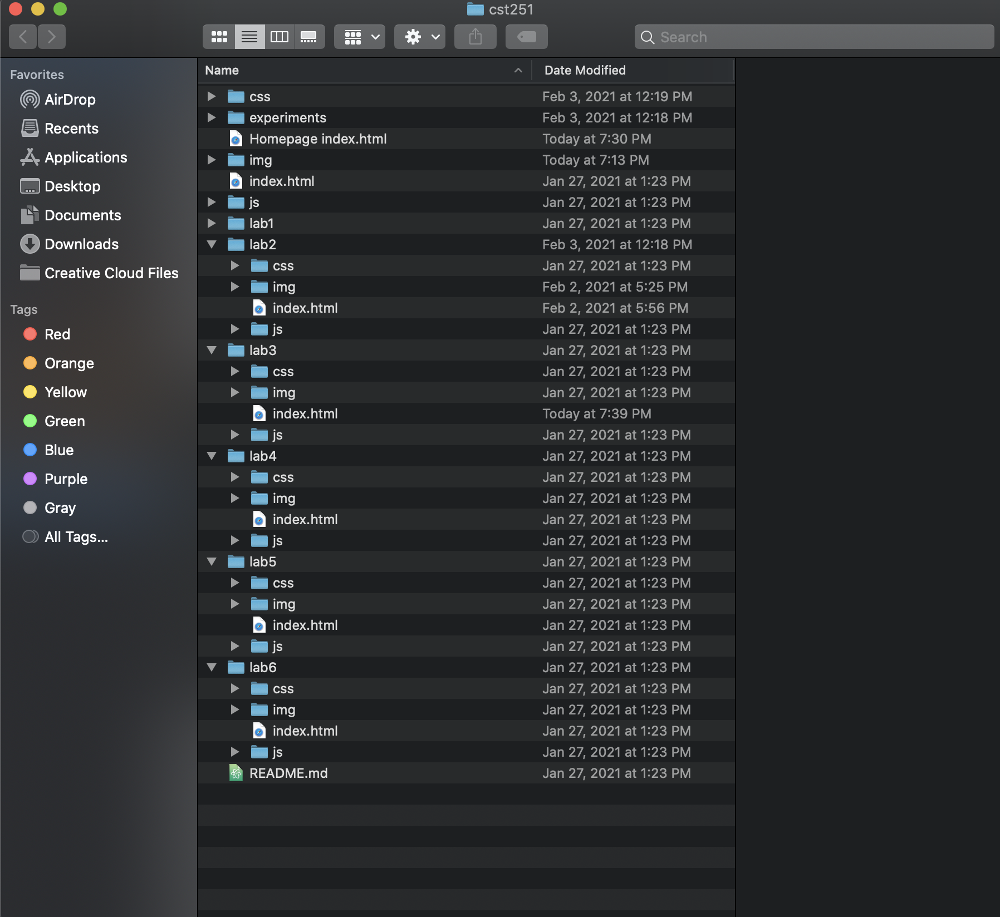
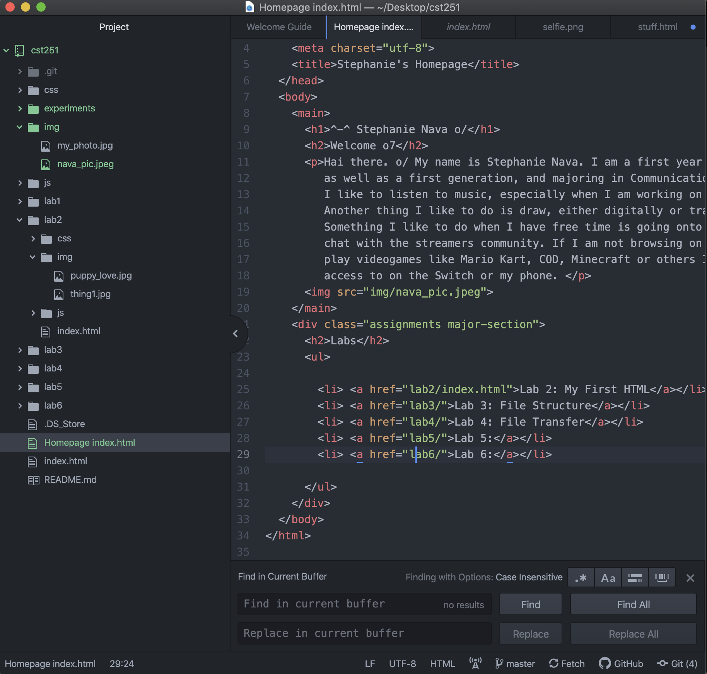
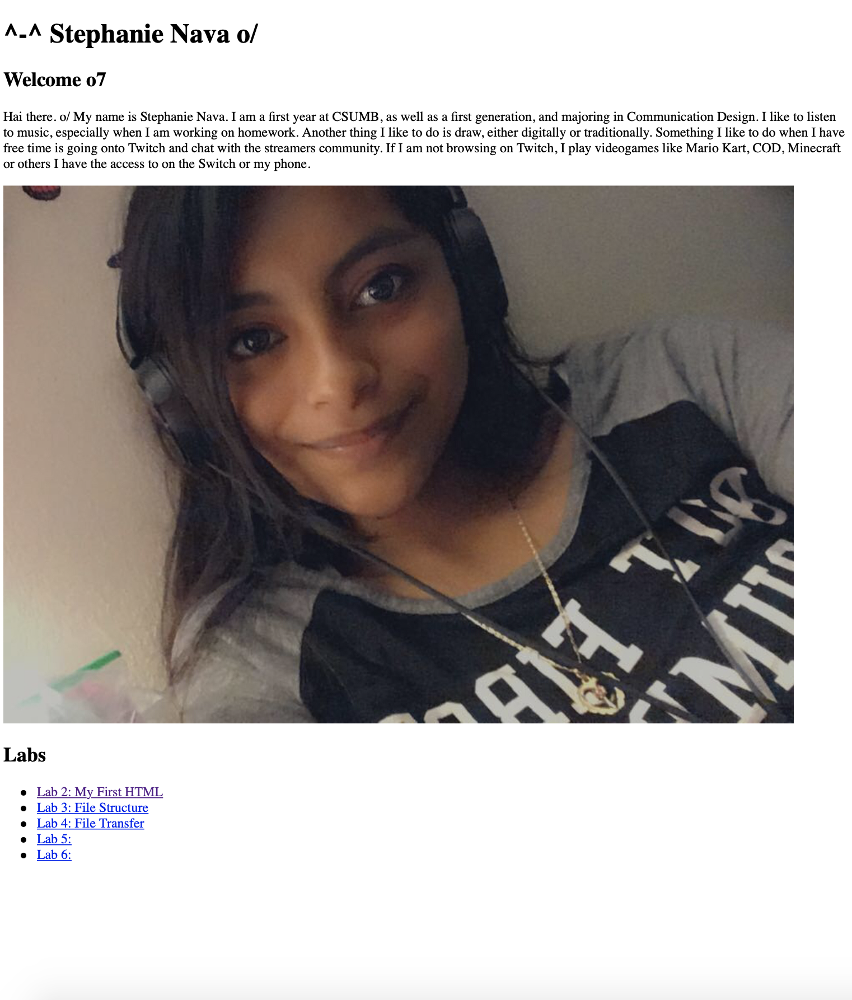

Challenge
The subject of this lab was to further create a local file on my computer and be able to add index.html files. As well as adding images to our files.
Problems
Some of the challenges I had was figuring out how to add images to my files. As well as figuring out the correct tags to use. Another difficulty I had was finding out how to make the files work correctly.
Results
The results from this lab was really interesting. Firstly, you are able to see this index.html file pretty well. Here is the file structure in which I have made:
Another thing you are able to see is me figuring out which tags to use, in the correct way. Here is my html source code, showing the different tags I used to create my file:
After figuring out which tags to use, and knowing what they are for, you are able to see my work on the browser. Here is my work popping up on a browser:
